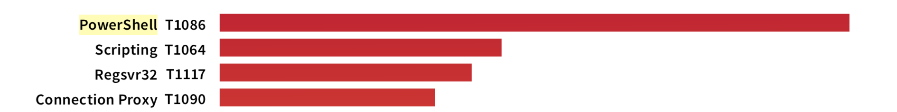
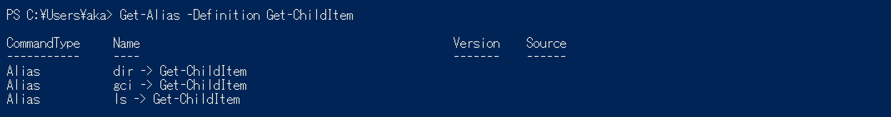
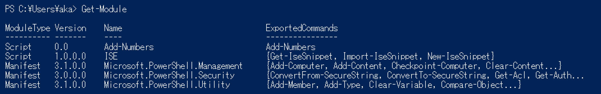
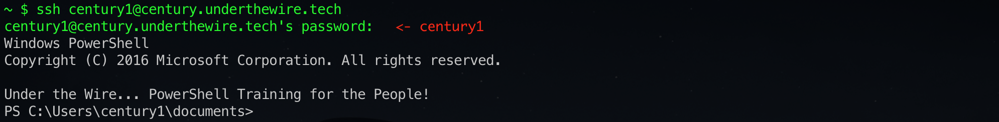
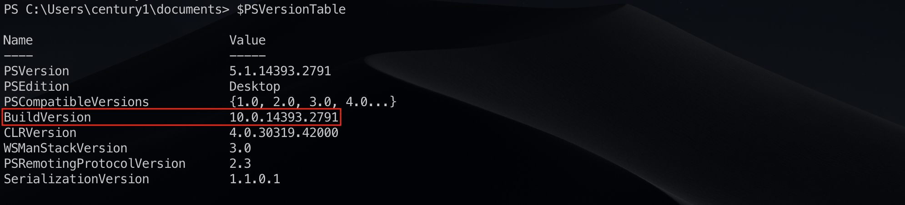
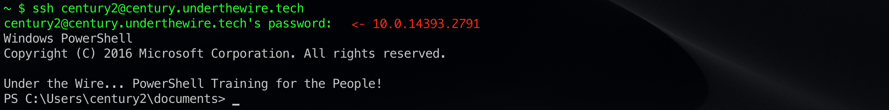

大和セキュリティ勉強会でPowerShellの基礎を学ぶ
2019年4月20日に神戸デジタル・ラボで開催された大和セキュリティ勉強会「Powershell忍者入門」に参加した。今回の勉強会はセキュリティ分野での関心も高まる「PowerShell」がテーマである。私はWindows環境へのペネトレーション手法を学ぶきっかけを求めて参加した。はじめにPowerShellの概要と基本操作を講義形式で学び、その後は各自でオンライントレーニングに取り組んだ。
PowerShellの概要
PowerShellは、2006年にMicrosoftがリリースしたコマンドラインシェルおよびスクリプト言語で、Windows 7以降のOSには標準搭載されている。GitHubが2018年に発表した急成長している言語ランキングでは4位になるなど注目を浴びている。またアメリカのセキュリティ企業であるRed Canaryが2019年に公開したレポートによると、PowerShellはATT&CKの中で最も悪用されているテクニックであり、攻撃者からの人気も高い。

出典：Threat Detection Report 2019 - Red Canary
PowerShellにはMicrosoftが開発した「Windows PowerShell」と、その後オープンソース化した「PowerShell Core」の2種類が存在する。MicrosoftはWindows PowerShellの開発を既に終了し、現在はPowerShell Coreの開発に注力している。しかし利用できるモジュールの多さから攻撃者は現在もWindows PowerShellを使用するケースが多いため、勉強会ではWindows PowerShellからの学習を推奨していた。
Windows PowerShellはバージョン5.0からJust Enough Administration（Windowsにおける sudo ）やConstrained Language Mode（制限モード）、Antimalware Scan Interface（PowerShellアンチウィルス）などのセキュリティ機能が搭載されている。しかし攻撃に必要な機能はバージョン2.0で搭載されているため、多くの攻撃者が現在もバージョン2.0を使用しているとのこと。
PowerShellの基本操作
はじめにWindows PowerShellの起動方法とバージョンの確認方法、PowerShellの特徴について学んだ後、PowerShellを実際に動かしながら基本操作を学んでいった。私はVM環境のWindows 10でWindows PowerShell ISEを起動して動作を確認した。
PowerShellコマンド
PowerShellのコマンドは 動詞-名詞 の形式で名付けられたコマンドレットの他に、エイリアスや関数、Windowsに付属するネイティブコマンド（ ping.exe のようなEXE形式のコマンド）も含まれる。多くのコマンドレットにはUnix形式、Windows形式、PowerShell形式の3つのエイリアスが設定されている。例えば、指定のディレクトリにあるファイルの一覧を表示する Get-ChildItem の場合、ls、dir、gci がエイリアスとして機能する。エイリアスの設定は Get-Alias で確認できる。

PowerShellでもLinuxと同様にリダイレクト（ > や >> ）を使用できるが、勉強会では Out-* コマンドレットによるリダイレクトを推奨していた。またパイプライン（ | ）もLinuxと同様に使用できる。PowerShellのパイプラインの出力はテキストではなくオブジェクトになるため、awk や sed のようなコマンドで整形する必要がない。例えば、実行中のプロセスの名前だけをファイルに書き出す場合、以下のようにコマンドを実行すればよい。Select-Object で指定したプロパティの情報だけをファイルに書き出せる。
PowerShellモジュール
コマンドやスクリプトはPowerShellモジュールというファイルで定義されている。PowerShellモジュールは $env:PSModulePath に設定されたディレクトリから読み込まれる。読み込まれたモジュールは Get-Module で確認できる。

新たにモジュールを追加する場合は Import-Module を使用する。
PowerShellスクリプト
PowerShellはスクリプト言語でもあるので、処理の関数化やif文、for文によるフロー制御なども可能である。.ps1 拡張子のファイルに処理を記載することでスクリプトとして実行できる。また独自関数をコマンドとして利用する場合は .psm1 拡張子のファイルで関数を定義して Import-Module で追加する。
PowerShellの関数は全ての出力が戻り値として扱われるのが特徴である。例えば以下のような関数の戻り値は、引数1と引数2の和だけでなく Write-Output によるメッセージも戻り値に含まれる。
Function Add-Numbers([int]$one, [int]$two) {
Write-Output "What's $($one) and $($two)?"
return $one + $two
}
PowerShellプロファイル
PowerShellプロファイルは自動起動スクリプトであり、Linuxの .bashrc のような役割を持つ。攻撃者はPowerShellマルウェアをプロファイルとして登録する可能性があるのでフォレンジックで確認すべきポイントとのこと。以下のコマンドを実行すると設定されているプロファイルを確認できる。
PowerShellの実行ポリシー
PowerShellには実行ポリシーという制限機能があり、デフォルトでは第三者のスクリプトを実行できない「Restricted」が設定されている。署名されていないローカルのスクリプトを実行したりモジュールを追加したりする場合は、PowerShellを管理者権限で起動して Set-ExecutionPolicy により実行ポリシーを「RemoteSigned」などに変更する必要がある。
PowerShellの実行ポリシーにはさまざまなバイパス手法が発見されている1。しかしMicrosoftは実行ポリシーをセキュリティ対策として位置付けていないため2、完全に修正されておらず現在もバイパスは可能とのこと。
PowerShellのトレーニング
勉強会の後半は「Under The Wire」というPowerShellのオンライントレーニングに取り組んだ。トレーニング環境のサーバーにSSHでログインし、前半に学んだPowerShellの知識を活かして問題を解いていく。オンライントレーニングは5つのステージに分かれており、初級ステージであるCenturyのレベル1の問題から進める。
まずレベル1のユーザー century1 でサーバーにログインする。レベル1のユーザーはJoeアカウントになっているため、パスワードに century1 を入力してログインする。

レベル1のユーザーの状態で与えられた問題に挑戦し、その解答がレベル2のユーザーのパスワードとなる。参考としてレベル1の解法を紹介する。レベル1の問題（Century1）は以下である。
The password for Century2 is the build version of the instance of PowerShell installed on this system.
PowerShellのビルドバージョンがレベル2のパスワードらしいので、$PSVersionTable を実行してバージョン情報を取得する。

BuildVersionの値は 10.0.14393.2791 となっている。この値をレベル2のユーザー century2 のパスワードとして入力するとログインに成功する。

この状態でレベル2の問題（Century2）に取り組む。徐々に難易度が上がっていく問題に挑戦し、レベル15まで解答できればステージクリアとなる。私は勉強会の時間内にレベル9まで解答できた。
所感
今回の大和セキュリティ勉強会はPowerShellの基本を学びたい人向けの内容で、PowerShellをほとんど使ったことがない私でも理解できる難易度だった。エイリアスの説明の際に講師のザックさんが「自分は ls を使っていても他の人は別のコマンドを使っているかもしれないので、Get-ChildItem とそのエイリアス3つを覚える必要がある」と言っていた。自分が使わないから知らなくて良いわけではない。攻撃者の狙いを把握するためにも基本の理解は欠かせないと感じた。
勉強会の中ではWMIの悪用やActive Directoryの情報収集も話題に上がり、現実世界でのPowerShellの悪用事例に興味が湧いた。実際の攻撃をシミュレートするペネトレーションテストではPowerShellを利用したWindows環境の攻略も求められる。勉強会で教えてもらったPowerShell EmpireというペネトレーションツールやPowerShell Galleryというリポジトリを今後の参考にしたい。
1 https://blog.netspi.com/15-ways-to-bypass-the-powershell-execution-policy/
2 https://technet.microsoft.com/en-us/gg261722.aspx